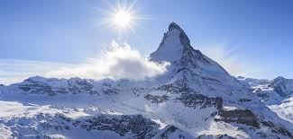

The Matterhorn
The Matterhorn (German), Cervino (Italian) or Cervin (French), is a mountain in the Pennine Alps. With its 4,478 metres (14,692 ft) high summit, lying on the border between Switzerland and Italy, it is one of the highest peaks in the Alps[2] and its 1,200 metres (3,937 ft) north face is one of the Great north faces of the Alps. It is one of the deadliest peaks in the Alps: from 1865 – when it was first climbed – to 1995, 500 alpinists died on it.[3] The mountain overlooks the town of Zermatt in the canton of Valais to north-east and Cervinia in the Aosta Valley to the south.
Meadow Peak
The Matterhorn (German), Cervino (Italian) or Cervin (French), is a mountain in the Pennine Alps. With its 4,478 metres (14,692 ft) high summit, lying on the border between Switzerland and Italy, it is one of the highest peaks in the Alps[2] and its 1,200 metres (3,937 ft) north face is one of the Great north faces of the Alps. It is one of the deadliest peaks in the Alps: from 1865 – when it was first climbed to 1995, 500 alpinists died on it. The mountain overlooks the town of Zermatt in the canton of Valais to north-east and Cervinia in the Aosta Valley to the south. The Matterhorn is an iconic emblem of the Swiss Alps and the Alps in general. Its first and tragic ascent by Edward Whymper and party marked the end of the Golden age of alpinism.
Fast Facts
 Matterhorn, the German name, is from the words Matte meaning "meadow" and horn meaning "peak." Cervino, the Italian name, and Cervin, the French name, derive from the Latin words cervus and -inus meaning "place of Cervus." Cervus is a genus of deer that includes elk.
Matterhorn, the German name, is from the words Matte meaning "meadow" and horn meaning "peak." Cervino, the Italian name, and Cervin, the French name, derive from the Latin words cervus and -inus meaning "place of Cervus." Cervus is a genus of deer that includes elk.
- The Matterhorn is the tenth highest mountain in Switzerland, and one of 48 Swiss peaks above 4,000 meters in height.
- The four faces of the Matterhorn face the four cardinal directions—north, east, south, and west.
- First ascent on July 14, 1865 by Edward Whymper, Charles Hudson, Lord Francis Douglas, Douglas Robert Hadow, guide Michel Croz, and the father and son guides Peter and Peter Taugwalder via the Hörnli Ridge, the most common route of ascent today. Just below the summit on the descent, Hadow slipped, knocking Croz off. The rope came tight and pulled Hudson and Douglas and the four climbers fell down the north face. The elder Taugwalder was belaying with the rope over a rock spike, but the impact broke the rope thereby saving the Taugwalders and Whymper from certain death. The ascent and accident is recounted in Whymper's classic book Scrambles Among the Alps.
- The second ascent came three days after the first, on July 17, 1865, from the Italian side. The party was led by guides Jean-Antoine Carrel and Jean-Baptiste Bich.
- The dreaded North Face, one of the great north face climbs in the Alps, was first climbed on July 31 and August 1, 1931 by Franz and Toni Schmid.
- The usual climbing route is up the Hörnli ridge on the northeast, which is the central ridge seen from Zermatt. The route, graded 5.4, involves 4,000 feet of climbing, mostly on rock (4th Class) but with some snow depending on conditions, and takes 10 hours round-trip. Some of the climbing is very exposed and climbers need to be skilled at climbing rock with crampons on their boots. The route, often guided, is difficult but not for adept alpinists. Fixed ropes are left on difficult sections. Routefinding is tricky in places, especially on the lower section which is usually climbed in the dark. The descent, when most accidents occur, takes as long as the ascent. Most climbers begin their ascent by 3:30 in the morning to avoid summer thunderstorms and lightning.
- On September 6, 2007 Zermatt guides Simon Anthamatten and Michael Lerjen ascended and descended the Hörnli Ridge in a record time of 2 hours 33 minutes. Their ascent time was 1 hour 40 minutes and the descent 53 minutes. Compare that to the usual seven to nine hours required by fit climbers. The previous record of three hours was set in 1953 by guide Alfons Lerjen and Hermann Biner, 15-year-old Zermatt boy.
- Over 500 people have died climbing the Matterhorn since 1865's tragic accident, many on the descent. Deaths average now about 12 annually. Deaths are due to falls, inexperience, underestimating the mountain, bad weather, and falling rocks. Many of the mountain's victims, including three from the first ascent disaster, are buried in Zermatt's downtown cemetery.
- Disneyland in Anaheim, California features a 1/100 scale replica of the Matterhorn that is 147 feet high. Matterhorn Bobsleds is a popular ride on the peak. Disneyland's website says, "Scale the snowy summit in your racing toboggan and then speed, screaming down the slopes, to a sensational splashdown." Also Mickey Mouse and friends, climbers in disguise, sometimes climb it.
- The Matterhorn figures in two Warner Brothers cartoons. In Pikes Peaker, a 1957 cartoon, Bugs Bunny and Yosemite Sam race each other to the summit of the Schmatterhorn. In A Scent of the Matterhorn, a 1961 cartoon, the skunk Pepe Le Pew pursues a female cat, who he thinks is a fellow skunk, past the Matterhorn.